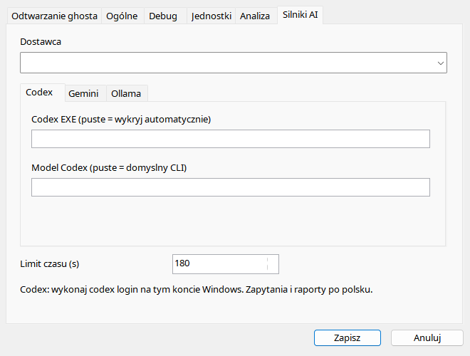
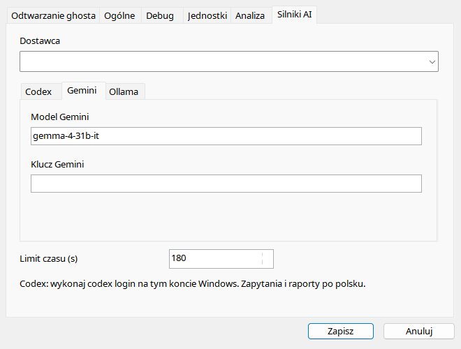
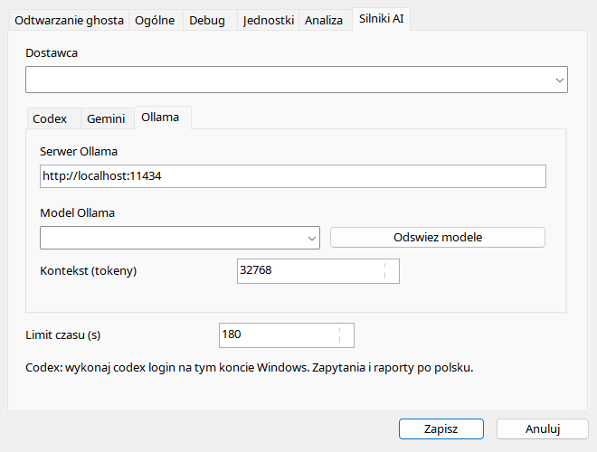

Najpierw wybierz dostawcê, potem skonfiguruj jego zak³adkê. Codex wymaga zainstalowanego natywnego CLI i osobnego logowania; pole EXE s³u¿y wskazaniu programu, nie skryptu-wrappera. Gemini wymaga poprawnego klucza i nazwy modelu. Ollama wymaga dzia³aj¹cego serwera i modelu ju¿ dostêpnego na tym serwerze. Odœwie¿enie listy nie pobiera modelu. Limit czasu ogranicza czekanie aplikacji, a nie gwarantuje anulowania ¿¹dania po stronie us³ugi. Nie udostêpniaj osobistego settings.ini z kluczami.
| Opcja / czynnoœæ | Dzia³anie i ograniczenia |
|---|---|
| Dostawca | Codex, Gemini lub Ollama. Edycja pól nie zak³ada konta w innej us³udze. |
| Limit czasu | 1–1800 s, domyœlnie 180. Koñczy oczekiwanie; nie dowodzi, ¿e chmura nie otrzyma³a zapytania. |
| Codex EXE | Puste pole wykrywa natywny codex.exe. Wrapper .cmd/.ps1 nie jest obs³ugiwany. Zaloguj CLI osobno. |
| Model Codex | Puste u¿ywa domyœlnego CLI; wskazany model musi byæ dostêpny dla konta/CLI. |
| Gemini | Identyfikator modelu i klucz API. Nie udostêpniaj osobistego settings.ini z kluczem. |
| Serwer Ollama | Domyœlnie http://localhost:11434. Podaj osi¹galny serwer, nie stronê pobierania modelu. |
| Model / Odœwie¿ | Lista modeli zainstalowanych na serwerze. Odœwie¿ nie pobiera wag. |
| Kontekst Ollama | 2048–262144 tokenów, domyœlnie 32768; rzeczywista pojemnoœæ zale¿y od modelu, konfiguracji i pamiêci. |
| Jêzyk | Ka¿dy backend dostaje aktualny jêzyk w prompcie, z zachowaniem oznaczeñ kokpitu. |


